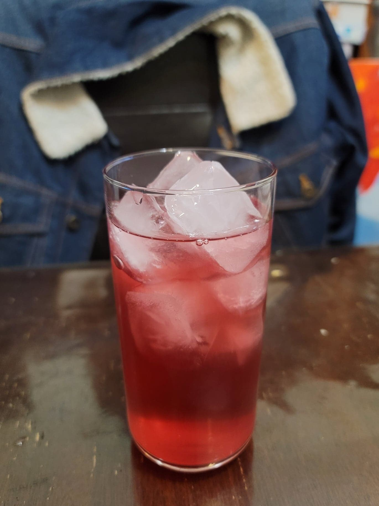

Cranberry Ginger Ale

Ingredients:
Optional Spices:
- 3 whole Cloves
- 1 stick Cinnamon
- 3 Allspice berries
- Zest of 1 Orange or Lemon
Cranberry Ginger Ale:
- 2 cups Water, nonchlorinated
- 2 tbsp Ginger, minced
- 6 tbsp Sugar
- 1 1/2 - 2 cups Cranberry juice
- 1/4 cup Ginger bug
Instructions:
- Combine the water, sugar, ginger, and spices into a pot and bring to a boil. Then remove from heat and stir to dissolve the sugar. Cover and let cool completely.
- Add in the ginger bug and stir to combine. Then distribute evenly into 2 16 oz flip-top bottles. Fill the rest of the remaining space of the bottles with cranberry juice. Let ferment for 3-7 days, or until carbonated to preference. Then refrigerate and serve cold over ice.